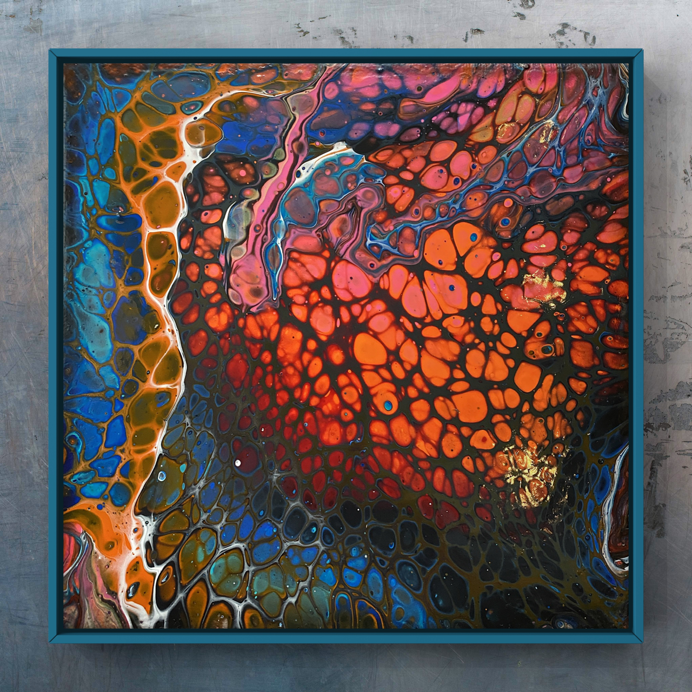
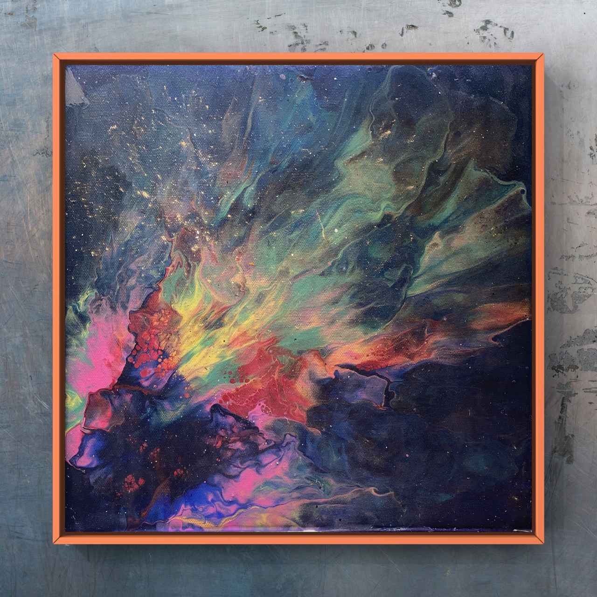

Daniel Mo Houshmand
Work in progress
Most of the site is in English, though you will find minor sections in Norwegian, primarily catering to the courses I tutor in Fluid Art at tegenskole.no.
I welcome and appreciate all forms of feedback - if you spot any errors, typos, or see opportunities for improvement, please do not hesitate to share!


Daniel Mo Houshmand AKA MoI am a passionate supporter of education and personal growth I consider myself far too fortunate to have been guided by some of the most brilliant minds on the planet. I want to dedicate this space to these extraordinary individuals who, above all, set an example of kindness and respect for others, irrespective of their rank or status guided me to the topics that occupies most of my time and the vast majority of this space. Tragically, two of them passed away prematurely in 2017 and 2019.
Hans Petter Langtangen (1962-2017)
First, I would like to honor my former professor and greatest inspiration, the exceptional awardwinning world reknowned proffessor, educator, vissionary and game changer Hans Petter Langtangen, who lost his battle with pancreatic cancer in 2017. Astoundingly, he managed to write and finish a series of Springer published bestsellers in Scientific Computing and Engineering between being diagnosed in early 2015 and his untimely passing in the fall of 2017. An extraordinarily inspirational figure, he fostered an environment that encouraged you to perform above and beyond your perceived abilities. He held a firm belief that anyone, regardless of the difficulty of their goals, could succeed with dedication and hard work. A true genius in every sense, he had an unwavering conviction that there were no ‘stupid’ people and he could convince even the most self-doubting among us that we had the potential to achieve greatness. He was a part of the prestigious Center for Neuroplasticity and his teachings instilled in me a passionate love for Numerical Methods for Partial Differential Equations. I am immensely proud to have had the opportunity to proofread some of his writings, and to have contributed to his last authored bestseller, Finite Difference Computing with Partial Differential Equations - A Modern Software Approach. I think of him every single day with a mixture of grief and gratitude. Rest in Peace, Maestro!
Peter Wittek (1980-2019)
Secondly, I wish to honor the memory of the adventurous and inspiring professor, Peter Wittek from the University of Toronto. He introduced me to Quantum Machine Learning back in 2017, when I had only just begun my earnest exploration of Machine Learning, Natural Language Processing, Topic Modelling, and Latent Dirichlet Allocation (LDA). At the time, I was an intern working as a Data Scientist in what was then the first officially funded AI Lab in Norway. Despite my novice status, I found Professor Wittek’s teachings invaluable, due in large part to my background in physics which provided a foundation to grasp these complex concepts with considerable effort.
Unfortunately, Professor Wittek’s life was tragically cut short in the devastating Himalayan avalanche of 2019. To this day, I carry a firm belief that had he still been with us, our third attempt to establish a Quantum Computing startup would have seen great success. His untimely demise is a profound loss to the scientific community and to everyone who had the privilege of knowing him personally or professionally. I shall always remember him, not just for his ground-breaking work in Quantum Machine Learning, but for his generosity in guiding me to navigate in this at that time completeley new emerging field during my early steps in the field, and later having faith in me and our maybe of hindsight overly ambitious attempt to pioneer the first Quantum Computer Company in Norway. May he rest in peace.
Jon Magne Leinaas
I am priviliged to be able to acknowledge and salute my former professor in Non-Relativistic Quantum Mechanics (Moderne Quantum Mechanics). What a giant of a mentor and more importantly the very best example of homo sapiens Jon Magne Leinaas who, alongside with his buddy Jan Myrheim discovered Anyons for almost 50 years ago. Their discovery was independently confirmed twice in different labs during the pandemic (see for instance Welcome Anyons - Nature). Jon, a member of the Nobel Prize in Physics committee, and Jan have been strong candidates for the prestigious award. The discovery of Anyons, which bridges Fermions with Bosons, has the potential to revolutionize the field of Quantum Computing and could have an unparalleled, positive impact on humanity.
Upon covering the diverse array of qubit types, my attention will significantly shift towards Topological Quantum Computers. It is my intention to devote a considerable portion of my future work in this direction, to elucidate every facet of the groundbreaking discovery of Anyons - a new class of particles, represent a profound advancement in our understanding of quantum mechanics. They form the underlying theoretical basis for Topological Quantum Computers, a novel computing paradigm that leverages the unique properties of so called exotic quasi particles Anyons for computational tasks. As such, they embody a promising approach to realizing fault-tolerant quantum computation, which is one of the most significant challenges in the field.
I am strongly convinced that Topological Quantum Computers, powered by Anyon-based qubits, will lead the next wave of advancements in quantum computing. My conviction is based on their inherent fault tolerance and stability, characteristics that are quintessential for the operation of practical, large-scale quantum computers. Through this dedicated exploration, I aim to highlight the profound potential of Anyon-based Topological Quantum Computers and their potential to dominate the future of quantum computing. This exploration will not only pay homage to the remarkable work of Leinaas but also contribute to advancing our collective understanding of this promising technology. I sincerely believe that by shedding light on the intricacies of these systems, we can inspire and accelerate further research and development in this space, ultimately bringing us closer to the quantum future we all envision.
Finally I also want to express my gratitude to Delft University and edx for offering comprehensive, world-class courses in the field of Quantum Computing and Quantum Computer Technology. These resources have played an instrumental role in enabling me to grasp these fascinating yet incredibly complex subjects and this site is highly influenced from the courses they have offered. I highly recommend them to anyone interested in this field.
I hope you enjoy exploring this website and feel free to reach out to me if you have any questions or comments. Feel free to browse, learn, and connect with me as you explore the various facets of my life and work. Whether you’re captivated by my artistic creations or intrigued by my technical expertise, I warmly invite you to embark on this journey with me and I am always delighted to connect with others who share my passion for learning, innovation, and positive impact.


About
Applied Mathematics
Data Science
Computer Science
Quantum Mechanics
Quantum Computation
Quantum Computer Hardware
- 4. The Hardware of Quantum Computers
- 5. Quantum materials
- 6. Introduction to Ket notation
- 7. Multi-Qubit States & Operations
- 8. Advantages and dissadvantages of Ket notation
- 9. A fact about maximally entangled states
- 10. Experimental and theoretical measurements
- 11. Spin Qubits
- 12. Superconducting qubits
- 13. V
- 14. Circuit QED
- 15. Assembling a quantum processor
- 16. NV Center Qubits
- 17. Quantum Annealing
- 18. Topological Qubits
- 19. Introduction to Topological Qubits
- 20. Majorana fermions and where to find them
- 21. Majorana bound states in superconductors
- 22. Majorana experiments
Quantum Machine Learning
- 23. Quantum Machine Learning Intro
- 24. Classical and Quantum Probability Theory
- 25. Quantum Machine Learning is a rocket emerging
- 26. Classical probability distributions
- 27. The Geometry of Probability Distribution
- 28. Stochastic Matrix
- 29. Quantum states
- 30. Qubits revisited
- 31. Superposition revisited
- 32. Bloch Sphere revisited
- 33. Interference
- 34. More qubits and entanglement
- 35. Multiple Qubits revisited
- 36. Further reading
- 37. Measurements revisited
- 38. Bra-Ket Notation
- 39. Dot product
- 40. Ket-Bra
- 41. More on the bra-ket notation
- 42. More on Measurements
- 43. Collapse of the Wave Function
- 44. The Born Rule
- 45. Measuring multiqubit systems
- 46. Mixed States
- 47. Density Matrix
- 48. Evolution in Closed Systems
- 49. Unitary evolution
- 50. More on the Unitary evolution
- 51. Open Quantum Systems
- 52. Interaction with the environment: open systems
- 53. Classical Ising Model
- 54. Hamiltonian
- 55. The Ising model
- 56. The transverse-field Ising model
- 57. Commuting Hamiltonian
- 58. Gate-Model Quantum Computing
- 59. Quantum Approximate Optimization Algorithm.
- 60. Solovay-Kitaev theorem
- 61. Quantum Circuits
- 62. Hadamard gate
- 63. The CNOT gate
- 64. Defining circuits
- 65. Compilation
- 66. References
- 67. Adiabatic Quantum Computing
- 68. Adiabatic Theorem
- 69. Unitary evolution and the Hamiltonian
- 70. The adiabatic theorem and adiabatic quantum computing
- 71. Quantum Annealing
- 72. Chimera Graph
- 73. Quantum annealing
- 74. References
- 75. Implementations
- 76. Superconducting Architectures
- 77. Dissadvantages
- 78. Trapped ions
- 79. Photonic Systems
- 80. Quantum Approximate Optimization Algorithm
- 81. Quantum approximate optimization algorithm
- 82. Analysis of the results
- 83. Encoding Classical Information
- 84. Loss Functions and Regularization
- 85. Ensemble Learning
- 86. Ensemble methods
- 87. Qboost
- 88. More QBoost
- 89. Solving by QAOA
- 90. References
- 91. Clustering by Quantum Optimization
- 92. Mapping clustering to discrete optimization
- 93. Solving the max-cut problem by QAOA
- 94. Solving the max-cut problem by annealing
- 95. References
- 96. Kernel Methods
- 97. An Inference
- 98. Thinking backward: learning methods based on what the hardware can do
- 99. A natural kernel on a shallow circuit
- 100. References
- 101. An Inference Circuit
- 102. (Tror ikke skal være her men i (11))
- 103. Probalistic Graphical Model
- 104. GFX!!!??
- 105. Probabilistic graphical models
- 106. Optimization and Sampling PGMs
- 107. Se igjen i lyx (Husk implementering og plots)
- 108. Se bildet grafen på lyx
- 109. Boltzmann machines
- 110. References
- 111. SE EKSAMEN!!!
- 112. Quantum Fourier Transform
- 113. Introduction
- 114. Quantum Fourier Transform
- 115. Even more Quantum Phase Estimation
- 116. Quantum phase estimation
- 117. References
- 118. Overview of the Harrow-Hassidim-Lloyd Algorithm
- 119. Introduction
- 120. Setting up the problem
- 121. Quantum Matrix Inversion
- 122. Quantum phase estimation
- 123. Using Quantum Linear Algebra for Learning
- 124. Conditional rotation of ancilla
- 125. Uncomputing the eigenvalue register
- 126. Rejection sampling on the ancilla register and a swap test
- 127. Quantum-Assisted Gaussian Processes
- 128. References
- 129. Integrating quantum kernels into scikit-learn
- 130. Preliminaries
- 131. Data preparation
- 132. Training
- 133. Creating a variational classifier with PennyLane
- 134. The variational circuit
- 135. Importing libraries
- 136. Implementing the circuit
- 137. Loading data
- 138. Visualising the decision boundary
- 139. More Training
Ruter

Document |
Modified |
Method |
Run Time (s) |
Status |
|---|---|---|---|---|
2023-09-01 17:25 |
force |
0.9 |
✅ |
|
2023-09-01 17:25 |
force |
0.78 |
✅ |
|
2023-09-01 17:25 |
force |
0.98 |
❌ |
|
2023-09-01 17:25 |
force |
1.09 |
❌ |
|
quantum_machine_learning/qml/1_2_QML_Quantum_Systems__Measurements_And_Mixed_States_qiskit_QDaria |
2023-09-01 17:25 |
force |
2.58 |
❌ |
2023-09-01 17:26 |
force |
1.39 |
❌ |
|
2023-09-01 17:26 |
force |
0.82 |
❌ |
|
2023-09-01 17:26 |
force |
1.43 |
❌ |
|
quantum_machine_learning/qml/2_2_QML_2_Quantum_Computation(06)__Adiabatic_Quantum_Computing_qiskit |
2023-09-01 17:26 |
force |
1.17 |
❌ |
quantum_machine_learning/qml/2_3_QML_Quantum_Computation(07)__Variational_Circuits_qiskit |
2023-09-01 17:26 |
force |
1.28 |
❌ |
2023-09-01 17:26 |
force |
0.98 |
❌ |
|
2023-09-01 17:26 |
force |
1.18 |
❌ |
|
2023-09-01 17:26 |
force |
1.47 |
❌ |
|
2023-09-01 17:26 |
force |
1.02 |
❌ |
|
2023-09-01 17:26 |
force |
1.19 |
❌ |
|
quantum_machine_learning/qml/4_2_QML_Coherent_Learning_(14)__Quantum_Matrix_Inversion_qiskit |
2023-09-01 17:26 |
force |
1.27 |
❌ |
quantum_machine_learning/qml/5_1_QML_Lecture_(15)__quantumkernels_svm |
2023-09-01 17:26 |
force |
1.48 |
❌ |
quantum_machine_learning/qml/5_2_QML_Lecture_(16)__quantumkernels_variational |
2023-09-01 17:26 |
force |
1.34 |
❌ |
2023-09-01 17:26 |
force |
0.91 |
✅ |
|
2023-09-01 17:26 |
force |
1.14 |
❌ |
Ibis Redibis Nunquam Per Bella Peribis